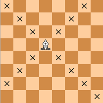

Слон может двигаться так далеко, как он захочет, но только по диагонали Каждый слон начинает на клетке своего цвета, и должен всегда оставаться на клетках того-же цвета Слоны хорошо работают вместе, так как они покрывают слабые стороны друг друга
